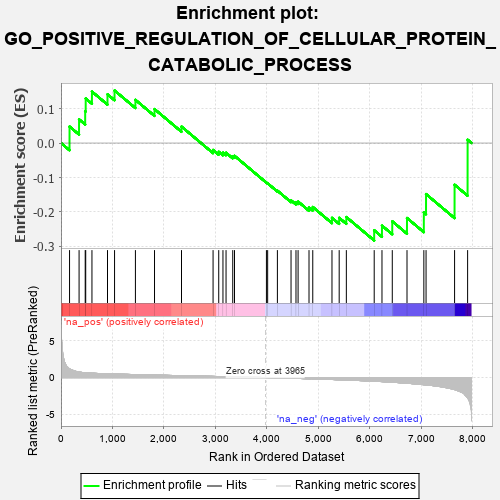
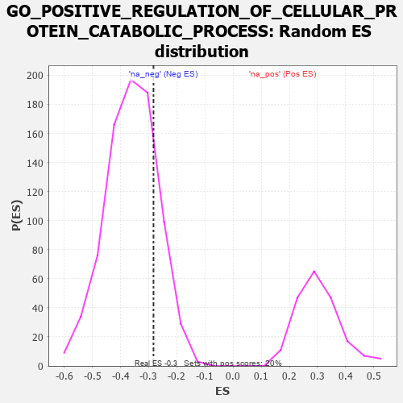

| | | Dataset | 7d |
| Phenotype | NoPhenotypeAvailable |
| Upregulated in class | na_neg |
| GeneSet | GO_POSITIVE_REGULATION_OF_CELLULAR_PROTEIN_CATABOLIC_PROCESS |
| Enrichment Score (ES) | -0.2829048 |
| Normalized Enrichment Score (NES) | -0.7829358 |
| Nominal p-value | 0.81398255 |
| FDR q-value | 0.9980865 |
| FWER p-Value | 1.0 |
Table: GSEA Results Summary

Fig 1: Enrichment plot: GO_POSITIVE_REGULATION_OF_CELLULAR_PROTEIN_CATABOLIC_PROCESS
Profile of the Running ES Score & Positions of GeneSet Members on the Rank Ordered List
| PROBE | GENE SYMBOL | GENE_TITLE | RANK IN GENE LIST | RANK METRIC SCORE | RUNNING ES | CORE ENRICHMENT | | 1 | AXIN1 | | | 166 | 1.159 | 0.0478 | No |
| 2 | GSK3A | | | 351 | 0.745 | 0.0687 | No |
| 3 | LRP1 | | | 470 | 0.648 | 0.0923 | No |
| 4 | CDC20 | | | 480 | 0.644 | 0.1293 | No |
| 5 | FBXW8 | | | 601 | 0.594 | 0.1493 | No |
| 6 | TMTC3 | | | 903 | 0.506 | 0.1414 | No |
| 7 | AKT1 | | | 1040 | 0.476 | 0.1524 | No |
| 8 | RBX1 | | | 1445 | 0.401 | 0.1253 | No |
| 9 | FMR1 | | | 1816 | 0.334 | 0.0985 | No |
| 10 | FAF1 | | | 2340 | 0.255 | 0.0477 | No |
| 11 | SOCS4 | | | 2953 | 0.157 | -0.0201 | No |
| 12 | KEAP1 | | | 3063 | 0.141 | -0.0255 | No |
| 13 | EDEM2 | | | 3145 | 0.131 | -0.0279 | No |
| 14 | FZR1 | | | 3205 | 0.122 | -0.0281 | No |
| 15 | CHFR | | | 3335 | 0.099 | -0.0385 | No |
| 16 | SMAD7 | | | 3369 | 0.093 | -0.0371 | No |
| 17 | VPS35 | | | 3989 | -0.006 | -0.1148 | No |
| 18 | RNF14 | | | 4013 | -0.010 | -0.1171 | No |
| 19 | VPS11 | | | 4202 | -0.041 | -0.1383 | No |
| 20 | LRRK2 | | | 4467 | -0.087 | -0.1664 | No |
| 21 | BAG6 | | | 4563 | -0.108 | -0.1719 | No |
| 22 | NUB1 | | | 4604 | -0.119 | -0.1699 | No |
| 23 | FBXW7 | | | 4816 | -0.161 | -0.1870 | No |
| 24 | CLU | | | 4889 | -0.174 | -0.1857 | No |
| 25 | PTEN | | | 5262 | -0.261 | -0.2171 | No |
| 26 | SUMO2 | | | 5402 | -0.296 | -0.2171 | No |
| 27 | EDEM1 | | | 5541 | -0.331 | -0.2149 | No |
| 28 | PLK1 | | | 6082 | -0.500 | -0.2533 | Yes |
| 29 | RGN | | | 6233 | -0.547 | -0.2397 | Yes |
| 30 | ABCA2 | | | 6433 | -0.634 | -0.2273 | Yes |
| 31 | GSK3B | | | 6719 | -0.768 | -0.2176 | Yes |
| 32 | FBXL5 | | | 7046 | -0.965 | -0.2015 | Yes |
| 33 | BBS7 | | | 7089 | -0.988 | -0.1483 | Yes |
| 34 | TAF1 | | | 7643 | -1.633 | -0.1211 | Yes |
| 35 | CAV3 | | | 7896 | -2.739 | 0.0094 | Yes |
Table: GSEA details [plain text format]

Fig 2: GO_POSITIVE_REGULATION_OF_CELLULAR_PROTEIN_CATABOLIC_PROCESS: Random ES distribution
Gene set null distribution of ES for GO_POSITIVE_REGULATION_OF_CELLULAR_PROTEIN_CATABOLIC_PROCESS